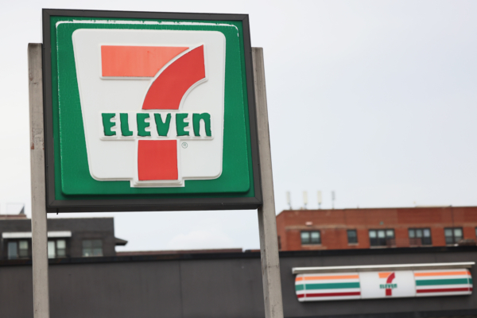

7-11便利店资料照。（Michael M. Santiago/Getty Images） 【2024年08月09日讯】（记者王兰多伦多报导）安省在今年9月5日起允许便利店卖酒精饮品，而且全省大部分7-11便利店不仅可售卖啤酒、葡萄酒和酒精冷饮，而且可在店内划出的用餐区饮用。全省大部分便利店门店都获得了酒类许可证，允许它们出售酒精饮料。据City News报导，加拿大7-11 副总裁兼总经理马克·古德曼Marc Goodman表示，该店将扩大食物供应范围。而由于香烟和传统商品的销量逐年下降，因此店铺需要重新塑造品牌形象。
便利店内可饮酒
拥有7-11酒类许可证的便利店可在用餐区提供酒精饮品和食物。顾客不能将饮品带出用餐区。拥有酒类许可证的便利店必须拥有至少可容纳 10 个座位的餐厅空间，并用一米高的墙与商店的其它部分隔开。每天中午至晚上 11 点将在指定区域供应葡萄酒和啤酒。
古德曼表示，在确认顾客已达到法定年龄后，他们选择的酒类饮品会被倒入玻璃杯中，送至顾客在餐厅内的餐桌上。
便利店酒品也可外卖
从9月5日期，安省的59家7-11便利店中的58家将会提供啤酒、葡萄酒、苹果酒和即饮鸡尾酒。唯一不能提供酒精饮品的是皮尔逊机场，机场不允许销售酒精饮品。
古德曼补充说，每家 7-11 商店中 20% 的冰箱都将专门用于存放酒精饮料，至于售价，他希望酒精饮品的定价可以与LCBO和啤酒店（the Beer Store）竞争。
根据安省政府的计划，获得酒类许可证的便利店、超市和油站将能在10月底前销售啤酒、葡萄酒和即饮鸡尾酒。
责任编辑：严枫